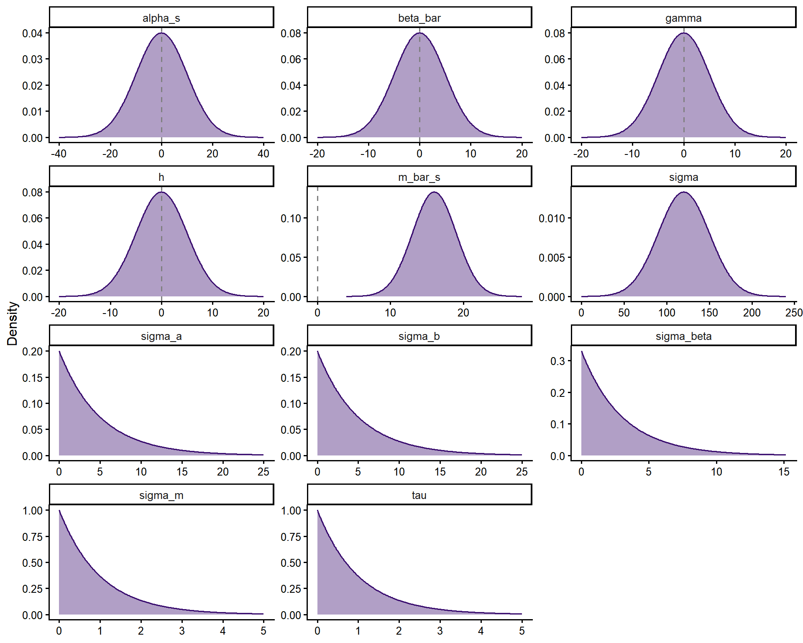
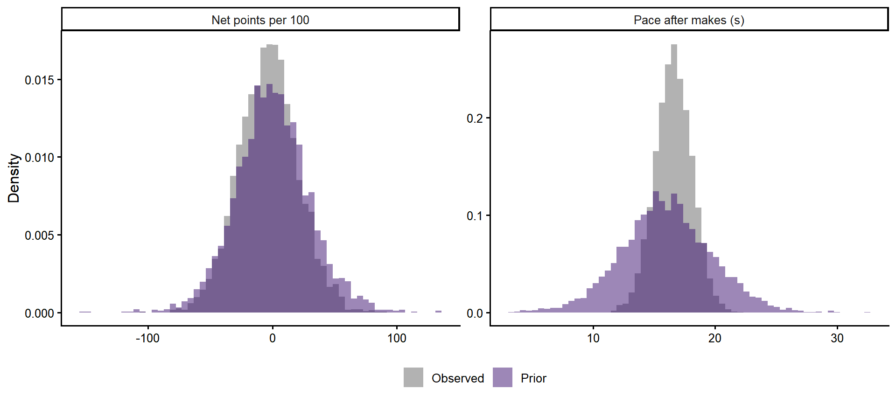

| Parameter | Prior | Why |
|---|---|---|
| m_bar_s | Normal(16, 3) | League mean pace; data around 16.3 s |
| sigma_m | Exponential(1) | Spread of usual paces; teams range 14-18 s |
| tau | Exponential(1) | Game-to-game variation of true pace |
| alpha_s | Normal(0, 10) | League average net points per 100; data around -2 |
| gamma | Normal(0, 5) | Between-team association, per second faster |
| sigma_a | Exponential(0.2) | Spread of team-season levels (mean 5) |
| beta_bar | Normal(0, 5) | Mean return, per second faster |
| sigma_beta | Exponential(0.33) | Spread of returns across team-seasons (mean 3) |
| sigma_b | Exponential(0.2) | Spread of opponent effects (mean 5) |
| h | Normal(0, 5) | Home advantage |
| sigma | Normal+(120, 30) | SD of one possession’s net points x 100; observed 124 |
Transition after an opponent’s made basket: model formulation
1 The question
After the opponent scores, an NBA offense can inbound and attack before the defense is set, or walk the ball up and run its half-court offense. Possessions that start after an opponent’s made basket are the most common and the slowest type of possession, and teams differ in how often they try to push them.
Pushing has an obvious upside, attacking a defense that is not set, and a cost that is easy to overlook: rushed decisions lead to turnovers, and a live-ball turnover hands the opponent one of the most valuable possessions in basketball. The question this project asks is:
When a team pushes the ball in transition after an opponent’s made basket, what is it worth, once the cost of turnovers is accounted for, and how does that vary across teams?
Two quantities answer it, for each team-season:
- Level: how productive a team’s possessions after an opponent’s made basket are, net of turnover cost, relative to the league in the same season.
- Return: within the same team-season, whether games in which the team pushes more are games in which those possessions are more productive.
1.1 What this analysis does not claim
The data are observational. Teams choose when to push, and the same factors that drive that choice (personnel, opponent, score) also affect how well possessions go. The model estimates adjusted associations, not the causal effect of pushing. Wherever the text says a team “gains” or “loses” by pushing, it means the association the model estimates, with the uncertainty the posterior reports.
1.2 Scope
This version covers NBA regular seasons 2023-24 and 2024-25. It does not model which kinds of transition possessions work (shot quality, who brings the ball up); that is a later layer.
2 Definitions
Every term below is used with exactly this meaning throughout the project.
2.1 Transition after an opponent’s made basket
Official definitions of transition do not use a clock. They describe a possession that ends before the defense is set, after a change of possession (Synergy Sports, n.d.; FIBA 2024). The FIBA Statisticians’ Manual lists a made field goal as a valid change of possession, so a team that pushes after conceding a basket is playing in transition in the strict sense. The FIBA manual is also the only official source found that puts a number on it: fast-break points are scored quickly, within a maximum of 8 seconds, before the defense is set (FIBA 2024).
The NBA publishes no time threshold. Its play-by-play has a fastbreak qualifier assigned by the scorer, with no published rule, so it cannot serve as the definition here.
| Term | Definition | Source |
|---|---|---|
| Universe | Possessions that start after the opponent’s made field goal | — |
| \(\Delta\) | Seconds of game clock from the opponent’s made basket to the first possession-defining action: a field-goal attempt, a shooting foul drawn, or a turnover | — |
| Inbound | Included in \(\Delta\): outside the last 2:00 of the 4th quarter and overtime, the game clock keeps running after a made field goal | NBA Rule 5 §V.2(b) (NBA, n.d.b) |
| Fast break (descriptive only) | \(\Delta \le 8\) s and no dead ball (timeout, non-shooting foul, violation, substitution) before the first action | FIBA 2024 §2.4 (FIBA 2024); NBA 8-second backcourt rule, Rule 10 §VIII (NBA, n.d.a) |
2.2 Why intention is measured in seconds, without a cut-off
The FIBA threshold describes a fast break, not the decision to push. In the data, only about 5% of possessions after an opponent’s made field goal reach their first action within 8 s (Data notes, Decision log). A team that pushes after a make usually ends up in early offense, with a first action somewhere around 8–12 s, and a push that the defense stops ends as a long possession that the play-by-play cannot tell apart from walking the ball up.
So intention is not classified possession by possession. It is measured, for each team-game, as how fast the team gets to its first action after an opponent’s made basket, in seconds, as a continuous quantity. A team that pushes as a rule has a lower average \(\Delta\) even when some of its pushes are stopped. No cut-off is fixed in advance; where the value of a possession changes with \(\Delta\) is shown descriptively in the report. The FIBA definition is kept only to describe how rare a strict fast break is after a made basket.
The inbound is included on purpose. The moment the ball is touched in bounds is not recorded in any public data, so it could not be removed anyway; more importantly, inbounding quickly is part of pushing. The part of the inbound that every team takes is a constant that shifts the scale but cancels out of the return, because pace is centred within each team-season.
Time to the first action is preferred to possession length, which is also available: possession length grows with offensive rebounds and ends at the defensive rebound after a miss, which is sometimes logged late. Possession length is used as a robustness check.
Possessions that start after a made free throw are left out on purpose. After a free throw the game clock is stopped and only restarts when the inbound is touched (NBA, n.d.b), so \(\Delta\) would exclude the inbound for those possessions and include it for all others. Keeping one start type makes \(\Delta\) mean the same thing everywhere.
2.3 Exclusions
| Rule | Why | Source |
|---|---|---|
| Possessions that start in the last 2:00 of the 4th quarter or of any overtime | The game clock stops after made baskets, so \(\Delta\) no longer includes the inbound and is not comparable | NBA Rule 5 (NBA, n.d.b) |
| Possessions that start with 54 s or less left in quarters 1–3 | Clock management drives the pace: teams speed up to get a 2-for-1 and hold for the last shot. In the data, mean \(\Delta\) drops from 16.3 s to 14.0 s and the share of fast breaks rises from 5% to 22% in that window | This project; covers the end-of-quarter heaves that Cleaning the Glass excludes (Cleaning the Glass, n.d.) |
| Garbage time: 4th quarter only, margin \(\ge 25\) with 12:00–9:00 left, \(\ge 20\) with 9:00–6:00 left, \(\ge 10\) with under 6:00 left | Outcomes no longer reflect how teams play when the game is at stake | Cleaning the Glass (Cleaning the Glass, n.d.) |
Deviation from the source. Cleaning the Glass also requires two or fewer starters on the floor combined. The data used here have no lineups, so only the margin rule is applied. This classifies somewhat more late-game possessions as garbage time than Cleaning the Glass would.
2.4 Known data limitations
- Play-by-play timestamps are whole seconds, so \(\Delta\) has a resolution of one second.
- Defensive rebounds are sometimes logged 1–3 s late (Beuoy 2020), which can shift \(\Delta\) for possessions that involve them.
- About 2% of possessions have no first action that can be matched in the event data; they are dropped and counted.
- About 8% have a dead ball before the first action, so their \(\Delta\) does not reflect an uninterrupted possession. The main analysis keeps them; a robustness check drops them.
3 Index notation
The data have two levels of observation. Possessions are the raw records. The intention to push is measured for team-games, one team’s possessions after an opponent’s made basket in one game (see Section 4). Whether the likelihood is written per possession or per team-game is decided with the model, in Part B.
| Index | Range | Meaning |
|---|---|---|
| \(i\) | \(1, \dots, N\) | Possession in the universe, after exclusions |
| \(k[i]\) | \(1, \dots, K\) | Team-game the possession belongs to (offense team \(\times\) game) |
| \(g[k]\) | \(1, \dots, G\) | Game of team-game \(k\) |
| \(t[k]\) | \(1, \dots, T\) | Team-season of the offense in team-game \(k\) (e.g. MIA 2024-25) |
| \(o[k]\) | \(1, \dots, T\) | Team-season of the opponent (the defense) in team-game \(k\) |
| \(s[k]\) | \(1, \dots, S\) | Season of team-game \(k\) (\(S = 2\)) |
Team-seasons, not teams, are the unit: rosters and coaches change between seasons and sometimes within one. Every team-season belongs to exactly one season, so \(s[k] = s[t[k]] = s[o[k]]\), and nothing estimated for one season is used to describe or adjust another.
Variables at the possession level:
- \(\Delta_i\): seconds from the opponent’s made basket to the first action (Table 1).
- \(d_i\): 1 if a dead ball occurs before the first action, 0 otherwise.
- \(\text{pts}_i\): points scored on the possession, measured as the change in score margin until the opponent’s next possession (so the rare points the defense scores in between, such as a technical free throw, are subtracted).
- \(m_i\): score margin, from the offense’s point of view, at the start of the possession.
- \(q_i\): quarter.
- \(e_i\): how the possession ended, recorded as the start type of the opponent’s next possession (for example: after our made field goal, after a defensive rebound, after a live-ball turnover, after a dead ball).
4 Quantities to estimate
4.1 Net points of a possession
Points scored are only half of what a possession is worth. How it ends decides what the opponent gets next: a made basket gives them an inbound against a set defense, a live-ball turnover gives them a possession that often starts with an open floor. The net points of possession \(i\) subtract the expected value of the opponent’s next possession:
\[ \text{net}_i = \text{pts}_i - v_{s}(e_i), \]
where \(v_s(e)\) is the league-average points per possession of possessions that start with type \(e\) in season \(s\). The values \(v_s(e)\) are estimated from the data of season \(s\) only; they are not taken from published figures or from the other season.
4.2 Team-game summaries
For team-game \(k\), with \(n_k\) possessions in the universe:
\[ \bar\Delta_k = \frac{1}{n_k}\sum_{i:\,k[i]=k} \Delta_i \qquad\qquad y_k = \frac{100}{n_k}\sum_{i:\,k[i]=k} \text{net}_i \]
- \(\bar\Delta_k\) is the observed pace after makes: the team’s average time to its first action after an opponent’s made basket in that game. Lower means more pushing. It is computed over all those possessions, including pushes that came to nothing.
- \(y_k\) is the team’s net points per 100 of those possessions in that game.
Intention is latent. \(\bar\Delta_k\) is an average of about 30 possessions, so it measures the pace a team chose that night with error. The model treats the true pace \(\mu_k\) as a parameter and \(\bar\Delta_k\) as a noisy measurement of it, with a standard error that follows from the within-game spread of \(\Delta\) and \(n_k\) (the exact form is set in Part B). Ignoring that error would shrink the estimated return towards zero.
Measuring intention per team-game, instead of comparing short possessions with long ones, avoids the most direct form of self-selection: a possession is short because an open shot appeared, so short possessions look good by construction.
4.3 Level and return
For team-season \(t\):
- Level \(\lambda_t\): the expected \(y_k\) of team-season \(t\), minus the league average of \(y_k\) in the same season, at the team-season’s own average pace after makes. Units: net points per 100 possessions after an opponent’s made basket, relative to the league.
- Return \(\beta_t\): the change in expected \(y_k\) when the team plays one second faster after makes than its own season average, that is, when \(\mu_k - \bar\mu_t = -1\). Because the pace is centred within the team-season, \(\beta_t\) compares the team with itself from game to game, which keeps much of the difference in talent between teams out of the comparison (not all of it, see Limitations).
Both are posterior distributions, not point estimates. Every statement in the report quotes an interval.
4.4 Wins equivalent
To translate the level into the units a front office uses:
\[ W_t = \frac{\lambda_t}{100} \times \bar n_t \times 82 \times w_{s[t]}, \]
where \(\bar n_t\) is the average number of possessions after an opponent’s made basket per game for team-season \(t\), and \(w_s\) is the number of wins associated with one point of average per-game scoring margin, estimated by regressing win percentage on scoring margin across the team-seasons of season \(s\) only. \(W_t\) is computed for every posterior draw, so it carries the model’s uncertainty, but not the uncertainty in \(w_s\).
4.5 Teams named in the report
The report names teams only when the posterior supports it.
- Quadrants cross intention (team-season average pace after makes, faster or slower than the league median of the same season) with level (\(\lambda_t\) above or below 0). For each quadrant, the team-season with the highest posterior probability of being in it is named.
- Return: the team-seasons with the largest and the smallest \(\beta_t\) are named.
- A team-season whose 95% interval for the relevant quantity includes 0 is not named as an extreme.
5 Game state: three analyses with the same model
Teams that are behind push to catch up, and teams that are ahead slow the game down. If a team pushes more in games it is losing, the pace after makes and the net points of that game are both driven by the score, and the association between them runs partly backwards: losing leads to pushing, not the other way round.
The same model is therefore fitted three times, changing only which possessions enter \(\bar\Delta_k\) and \(y_k\):
| Analysis | Possessions used | What it isolates |
|---|---|---|
| Full | Every possession in the universe | The overall association |
| Close | Possessions in quarters 1–3 that start with \(\lvert m_i \rvert \le 5\) | Pushing when the score does not force it |
| First quarter | Possessions with \(q_i = 1\) | The game plan: the game starts tied, so the score has had little time to shape decisions |
The 4th quarter and overtime are left out of the close analysis because close games are played slower near the end, well before the last two minutes. For possessions that start within 5 points:
| Segment | Mean \(\Delta\) | Fast breaks (\(\Delta \le 8\) s) |
|---|---|---|
| Quarters 1–3 | 16.3 s | 5.1% |
| 4th quarter, 12:00–6:00 | 17.8 s | 3.3% |
| 4th quarter, 6:00–2:00 | 19.2 s | 1.8% |
| Overtime (before its last 2:00) | 19.5 s | 0.9% |
Keeping them would make a game look slow partly because it was close at the end, which is the score effect this analysis is meant to remove.
“Close” is defined by the margin at the start of each possession, never by the final result. Keeping only games that ended close would select on the outcome being studied, a collider that biases the estimate.
How to read them together: if level and return keep their sign and rough size across the three analyses, the conclusion does not depend on game state. If they change, the direction of the change is itself a finding about how the score drives pushing.
Two limits of the first-quarter analysis:
- It uses about a quarter of the possessions, so team-game summaries are noisier. Partial pooling across team-seasons is what keeps the estimates usable.
- Starters play most of the first quarter, so it describes the game plan with the starting lineup, not the whole roster.
6 The model
The model has two submodels that are fitted together. Each one has a stochastic component (how an observation varies around what is expected) and a deterministic component (what is expected). They are connected by the latent pace \(\mu_k\).
6.1 Symbols
| Symbol | Type | Meaning |
|---|---|---|
| \(n_k\) | Data | Possessions after an opponent’s made field goal in team-game \(k\) |
| \(\bar\Delta_k\) | Data | Mean seconds to the first action in \(k\) |
| \(s_s\) | Data | Within-game standard deviation of those seconds, pooled over season \(s\) |
| \(y_k\) | Data | Net points per 100 possessions in \(k\) |
| \(\text{home}_k\) | Data | 1 if the team plays at home |
| \(t[k], o[k], s[k]\) | Data (indices) | Team-season, opponent team-season and season of \(k\) |
| \(\mu_k\) | Latent parameter | True pace the team chose that night |
| \(m_t\) | Parameter | Usual pace of team-season \(t\) |
| \(\tau\) | Parameter | Game-to-game variation of the true pace |
| \(\alpha_s\) | Parameter | League average in season \(s\) |
| \(a_t\) | Parameter | Level of team-season \(t\) (\(= \lambda_t\)) |
| \(\beta_t\) | Parameter | Return: net points per 100 per second faster than the team’s usual pace |
| \(b_o\) | Parameter | Effect of the opponent team-season’s defense |
| \(h\) | Parameter | Home advantage |
| \(\sigma\) | Parameter | Standard deviation of the net points of one possession |
| \(\bar\beta, \sigma_\beta\) | Hyperparameters | Mean and spread of returns across team-seasons |
| \(\gamma, \sigma_a\) | Hyperparameters | Between-team association of usual pace with level, and spread of levels |
| \(\bar m_s, \sigma_m\) | Hyperparameters | League mean pace in season \(s\) and spread of usual paces |
| \(\sigma_b\) | Hyperparameter | Spread of opponent effects |
| \(\eta_k\) | Derived | Expected net points per 100 in \(k\) |
| \(W_t\) | Derived | Wins equivalent |
6.2 Submodel 1: intention (pace after makes)
Stochastic component. The observed mean \(\bar\Delta_k\) is an average of \(n_k\) possessions whose times to first action spread with a within-game standard deviation of about 5 s. Its standard error is \(s_{s[k]}/\sqrt{n_k}\) (about 0.9 s with all possessions, about 1.4 s in the close analysis), which is treated as known. \(s_s\) is the within-game standard deviation pooled over season \(s\), not each game’s own: in the close and first-quarter analyses some team-games have only one or two possessions, and their own standard deviation is undefined or unreliable.
\[ \bar\Delta_k \sim \text{Normal}\left(\mu_k,\ s_{s[k]}/\sqrt{n_k}\right) \]
Hierarchy. The true pace of each game is drawn around the team-season’s usual pace, and usual paces around the league mean of the season:
\[ \mu_k \sim \text{Normal}\left(m_{t[k]},\ \tau\right) \qquad m_t \sim \text{Normal}\left(\bar m_{s[t]},\ \sigma_m\right) \]
In the data, the game-to-game spread of \(\bar\Delta_k\) is about 1.5 s, so roughly 35-45% of its variance is measurement noise. Using \(\bar\Delta_k\) directly as a predictor would shrink the estimated return towards zero; using \(\mu_k\) carries that noise into the uncertainty instead.
6.3 Submodel 2: outcome (net points)
Stochastic component. \(y_k\) is also an average of \(n_k\) possessions, so by the central limit theorem it is close to normal, with a standard deviation that shrinks with \(n_k\):
\[ y_k \sim \text{Normal}\left(\eta_k,\ \sigma/\sqrt{n_k}\right) \]
A Student-\(t\) likelihood is kept as an alternative if posterior predictive checks show heavier tails than this allows.
Deterministic component. The expected net points per 100 of team-game \(k\):
\[ \eta_k = \alpha_{s[k]} + a_{t[k]} + \beta_{t[k]}\,\big(m_{t[k]} - \mu_k\big) + b_{o[k]} + h\cdot\text{home}_k \]
The predictor of the return is \(m_{t[k]} - \mu_k\): how many seconds faster than its own usual pace the team played that night. Positive means faster.
Hierarchy.
\[ a_t \sim \text{Normal}\left(\gamma\,\big(\bar m_{s[t]} - m_t\big),\ \sigma_a\right) \qquad \beta_t \sim \text{Normal}\left(\bar\beta,\ \sigma_\beta\right) \qquad b_o \sim \text{Normal}\left(0,\ \sigma_b\right) \]
6.4 Within and between
The model answers two different questions, side by side:
- Within (\(\beta_t\)): does this team gain when it plays faster than its own habit? The team is compared with itself, so its talent, roster and coach stay fixed. This is the more defensible comparison.
- Between (\(\gamma\)): do teams that habitually play faster after makes do better? This is the question behind the raw team-season scatter, adjusted for opponent and home court, but it remains exposed to differences in talent and roster between teams.
This is the classic within/between decomposition of multilevel models. The report presents \(\beta_t\) as the main result and \(\gamma\) as context.
6.5 What controls for team quality
No extra covariate is needed, and none that pushing itself could affect is used: \(a_t\) absorbs everything that is fixed for a team within a season, \(b_o\) absorbs the opponent, and \(h\) the venue. All of them are season-specific.
6.6 Connection between the submodels
\(\mu_k\) is estimated from \(\bar\Delta_k\) and from the team’s usual pace \(m_t\) (a game with few possessions is pulled towards the team’s habit), and it enters \(\eta_k\) through \(m_{t[k]} - \mu_k\). All parameters are estimated jointly in a single fit, so the uncertainty about each game’s true pace propagates into \(\beta_t\).
7 Priors
Slopes are centred at zero, so the priors do not say whether pushing pays; the data do. Scales come from the descriptive data and are wide enough not to decide the result. Units: net points per 100 possessions and seconds. The only informative prior is the one on \(\sigma\), the spread of the net points of a single possession, which is directly observed (about 1.24 points, or 124 on the per-100 scale).

7.1 Prior predictive check
Team-games are simulated from the priors alone (no data), with 30 possessions each, a within-game standard deviation of time to first action of 5 s, and a home game half of the time. The simulated observed pace \(\bar\Delta_k\) and net points \(y_k\) should cover the range of the real data without being confined to it, and should not be absurd (negative seconds, thousands of points).

| Pace: 1% and 99% (s) | Pace below 0 s | Net per 100: 1% and 99% |
|---|---|---|
| 7.1 to 24.8 | 0.0% | -70 to 74 |
References
Beuoy, Mike. 2020. “New Feature: Measuring Pace Based on Time to Shot.” Inpredictable. https://www.inpredictable.com/2020/01/new-feature-measuring-pace-based-on.html.
Cleaning the Glass. n.d. “Garbage Time.” https://cleaningtheglass.com/stats/guide/garbage_time.
FIBA. 2024. FIBA Statisticians’ Manual 2024. https://assets.fiba.basketball/image/upload/documents-corporate-fiba-statisticians-manual-2024.pdf.
NBA. n.d.a. “Rule No. 10: Violations and Penalties.” https://official.nba.com/rule-no-10-violations-and-penalties/.
———. n.d.b. “Rule No. 5: Scoring and Timing.” https://official.nba.com/rule-no-5-scoring-and-timing/.
Synergy Sports. n.d. “Glossary.” https://support.synergysports.com/support/solutions/articles/77000572558-glossary.